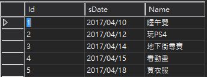

前言
其實這應該是使用SQL跳到Entity Framework(以下簡稱EF)的一種不適應，但是如果是新設計的資料庫應該都會使用datetime型態當日期的儲存格式，可是公司的舊的設計方式已經丟出去給客戶上線了，大家應該都知道以前很多人都是使用String型態來儲存日期，但是一到EF這種物件導向式的用法上就出問題了，所以這篇就是紀錄一下我查到的方法。
SQL查詢
先做一個假資料如下圖

我們依照以前SQL的查詢方法以下語法是可以使用的
例如要查4/12到4/15的資料1SELECT * FROM Schedule WHERE sDate BETWEEN '2017/04/12' AND '2017/04/15'
使用EF
如果只是單純SQL轉成LINQ應該會寫成像下圖這樣
但是物件導向的寫法這樣當然是錯誤的不能string比對string的範圍….
這邊真的讓我卡了一下，查資料查半天都是錯的，後來發現原來我關鍵字打反了，一直打成linq entity dateTime to string，應該是要查linq entity string to datetime，結果一查果然對了。
原來有對應的Method可以解決這問題，使用compare這方法可以解決，程式碼如下
LINQ To Entity 查詢
|
|
Lambda 語法
|
|
後記
最近再把大量sql語法查詢都改成LINQ To Entity，這樣不但好Debug，又能防止SQL Injection 真的方便多了。